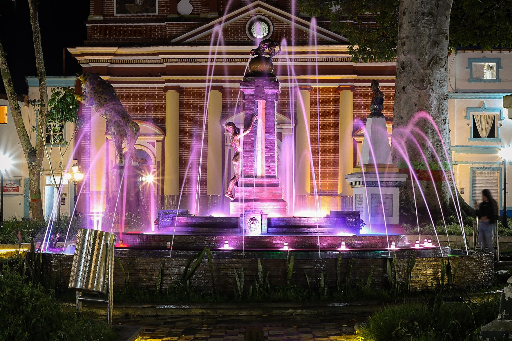
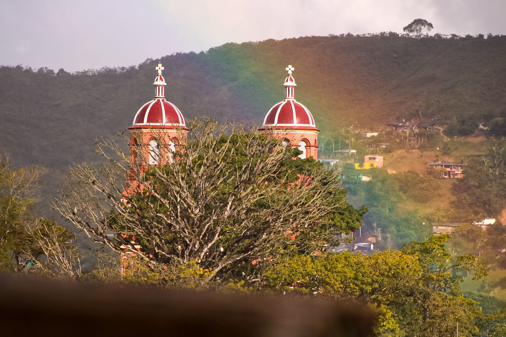

Amalfi es un municipio andino de Colombia, en la parte más septentrional de la Cordillera Central y en la subregión Nordeste del departamento de Antioquia. Limita por el norte con los municipios de Anorí y Segovia, por el este con los municipios de Segovia, Remedios y Vegachí, por el sur con los municipios de Vegachí, Yalí, Yolombó y Gómez Plata, y por el oeste con los municipios de Guadalupe y Anorí. Amalfi es de clima frío debido a que está en un valle con extensas montañas y abismos Con una extensión de 1210 kilómetros cuadrados, es uno de los municipios más grandes del departamento con una población de 22,088 habitantes.3 La cabecera municipal con una población de 11.481 habitantes,4 se localiza en el Valle de La Víbora y sobre una región montañosa y rica en minería y reservas hídricas que han atraído desde la segunda mitad del siglo xix a colonos de otras regiones de Antioquia, especialmente de Copacabana, Rionegro, La Ceja, Santa Fe de Antioquia, Yarumal y Santa Rosa de Osos, así como de numerosos extranjeros especialmente de España, Siria, Líbano, Marruecos, China, Alemania, Suecia, Finlandia y los países de África Occidental como Nigeria. La afluencia permanente de colonos entre los siglos XIX y XX especialmente, en búsqueda de la minería, absorbió a la población indígena local de la cual se han encontrado vestigios de hace 9 mil años y cuyas culturas principales correspondían a los Yamesíes, Guamocoes y Tahamíes. La desaparición de sus lenguas, que sobrevive en expresiones locales y nombres de lugares, y su interacción con las razas europeas y africanas, hizo que dichos grupos desaparecieran de la región con sus identidades propias, pero sobreviven en sus descendientes mestizos.

Lo de la leyenda del tigre de Amalfi ha dado mucho de que hablar y muchos tienden a burlarse del cuento
del tigre, que a la final no fue tigre pero tampoco cuento, es decir, un jaguar al que eternamente
llamaremos tigre y que hace parte de la identidad amalfitana.
El tigre, que llegó a las bellas selvas de Amalfi, dicen que huyendo del calor de Zaragoza y Segovia
o también hay quienes afirman que fugado de un circo, no podía dejar de visitar la mejor tierrita de
este nordeste bello y sin duda alguna se fue pa’ las «amalfias» fundado por Juan José Rojas en 1838 y no
precisamente en busca de matas o agua, no, el feroz animal llegaba era por las gordas vacas, los
fértiles marranos y los finos caballos de los campesinos que muy pronto se cansaron del extraño rival
que solo quería hartarse con el sustento de los nativos. Es así como de una forma insólita empieza el
pueblo a revolucionarse y desde el cura hasta el alcalde inician un revolcón que desemboca en varios
operativos fallidos liderados por valientes hombres que regresaban con las manos vacías. Pues el animal
fuera de ser un tragón también era astuto y esquivaba las trampas que los cazadores le ponían. Pero no
todo podía salir bien para el animal, un aventurado día se inició un operativo sin precedentes en la
historia del viejo Cancana.
Eran cinco los valientes hombres de dos familias Jaramillo (tres hermanos) y los Vasquez (padre e
hijo)quienes cansados de todo se deciden a ir por el animal junto con 6 perros cazadores. Todo el pueblo
estaba consternado y unido y con los nervios en punta. A las señoras se les caían las arepas de las
manos, a los señores se les cruzaban los machetes y a los niños los encerraban temprano «porque que tal
que ese animal se venga pa’ ca y ahí sí no quedan sino los corotos» decían las abuelas sabias. Todos
esperaban con ansias lo que estaba pasando.
Pues se llegó el momento, era una noticia del campo, sí, «cazaron al tigre» lo cogieron. Eh ave maría
esto hay que celebrarlo y todo Amalfi salió volado para el Alto del Zancudo, todos, nadie se quedó. Ese
Viernes 18 de Noviembre de 1949 la gente se revolcó en torno a esa noticia y en verdad ellos no sabían
que estaban tejiendo una historia nueva. El cura era el primero que a lomo de mula junto con las mas
reconocidas gentes partía rápido pues no se quería perder nada y el alcalde que sin mas ni menos sacó 20
pesos del erario publico porque eso había que celebrarlo. Se llegó el momento y todos estaban reunidos
en el lugar indicado esperando a los valientes héroes. Eran las 4 de la tarde cuando llegaron con la
fiera muerta que pesaba 92 Kilos y medio y que sobre los hombros de los nuevos héroes era motivo de
gritos y hasta injurias.
«Todos se rieron y gozaron y se pusieron el pueblo de ruana, pero que importa ya no hay tigre que joda
ahora saquemos chicha y guardemos las rulas pa’ no peliar por cualquier bobada» y así hasta que
borrachos y las damas acostadas el pueblo se fue durmiendo hasta el otro día.
Los ánimos se calmaron y con mas maña que el tigre llegó un vivaracho de medallo a engañar a los
amalfitanos quienes al ver a un Señor tan elegante balbuceaban algunos como «bobos» y convencidos de su
palabra le soltaron el cuero del tigre ‘disque’ para disecarlo, pero que va, el muy vivo se quedó con la
plata y con el cuero y dejó a los del pueblo viendo un chispero. Aun así, eso no fue impedimento para
hablar y mostrar del tigre y como buen antioqueño verraco en plena plaza lo ubicaron para que no quede
duda de la dureza de los amalfitanos.
Fue así como poco después le llegó a Don Antonio Pélaez la hora de rendir las cuentas como buen alcalde
y aunque era por un motivo justo el pobre funcionario fue destituido por gastar los 20 pesitos del
erario publico.
Ya para terminar me uno a las palabras de Don Abelardo Jaramillo uno de los cazadores. Esta es la
historia de un tigre que aterrorizó a un pueblo, devoró mil reces y tumbó un alcalde»